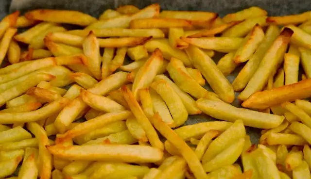

🍟 Papas a la Francesa con Paprika
¡Una receta crocante, sabrosa y perfecta para cualquier momento!

✅ Ingredientes
👩🍳 Pasos para preparar
- Lava bien las papas y pélalas si lo deseas.
- Córtalas en tiras delgadas (forma clásica de papas a la francesa).
- Déjalas en agua fría durante 30 minutos para que queden más crujientes.
- Sécalas muy bien con un paño limpio o papel de cocina.
- En un bowl, mézclalas con aceite, paprika, sal y pimienta.
- Hornea a 200 °C por 30-35 minutos o fríelas hasta que estén doradas.
- Sírvelas calientes con tu salsa favorita.